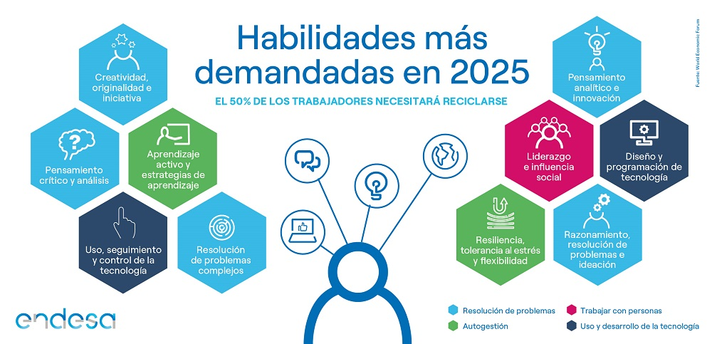

----LOS EMPLEOS DEL FUTURO----
¿Cuales seran los trabajos que permaneceran en un fututro?
Con el avance de la tecnología y el hecho que la mayoría de los puestos
trabajos que hoy en día se posicionan como los trabajos más demandados, hace 10 años ni siquiera existían,
la expectativa sobre cómo pueda evolucionar el mundo laboral a corto, mediano y largo plazo, no deja de desatar muchas dudas que a continuación responderemos.
"Pase lo que pase, hay que tener siempre presente el cambio y estar preparados para las nuevas dinámicas que adoptarán las empresas,
además de estar al día de los últimos avances tecnológicos. Aunque a veces pueda parecer abrumador, pensad lo enriquecedor que puede llegar a ser estar continuamente re inventándonos y aprendiendo cosas nuevas."
!ESTAS SON ALGUNAS DE LAS CARRERAS QUE SE CONSIDERAN A UN FUTURO¡
***Desarrollador de Software***
Estos profesionales se encargan de desarrollar los pilares de los sistemas operativos creados por programadores,
así como de probar el código de nuevos programas para garantizar su eficiencia.
***Creadores Digitales***
Cuyo objetivo es crear contenidos digitales de valor y de interés, con la intención de captar la atención del cliente.
Lo podríamos comparar con la publicidad tradicional pero mucho más elaborada y con mejores resultados.
***Porfesor Online***
Consiste en transformar la enseñanza tradicional con todos los medios tecnológicos disponibles hasta que llegue un punto en el que ni siquiera sea necesario asistir a las aulas,
todo se podrá hacer desde casa.
***Seguridad de la Informacion***
Estos especialistas son responsables de diseñar, implementar y mantener una política de seguridad integral con el objetivo de proteger la información de una empresa.
***Gestor Financiero***
Es una figura necesaria, ya que su labor es ofrecer tanto asesoramiento financiero profesional como gestión de transacciones a sus clientes de forma personalizada.
Es decir, identificar las necesidades y objetivos de cada cliente y evaluar sus acciones de inversión presentes y futuras.
Según la institución, para 2025 el trabajo se dividirá a partes iguales entre personas y máquinas.
Las máquinas se centrarán en el tratamiento de información y datos, las tareas administrativas y los trabajos manuales rutinarios para los puestos de trabajo administrativos y productivos.
El futuro para uno de cada dos trabajadores en el mundo pasa por la formación y el reciclaje para adaptarse a los cambios que ya están aquí y que exigirán nuevas habilidades.

-----CONCLUSION------
Las nuevas tecnologías interpretarán un papel omnipresente en los trabajos del futuro, y por supuesto, en la evolución de muchas profesiones como las conocemos hoy en día.
No obstante, aunque se crea que el futuro laboral se basará en extinguir las operaciones humanas, si tienes la suerte de ser nativo digital o adaptarte fácilmente a la revolución tecnológica,
estamos seguros de que con la formación pertinente, serás capaz de reinventarte y ajustarte a las necesidades de los trabajos del futuro literalmente como nunca antes.
La salud es otro de los sectores que contarán con grandes oportunidades de empleo en el futuro, muy ligado a la tecnología, verán mayor aumento de profesional áreas relacionadas con la psicología y adiciones.